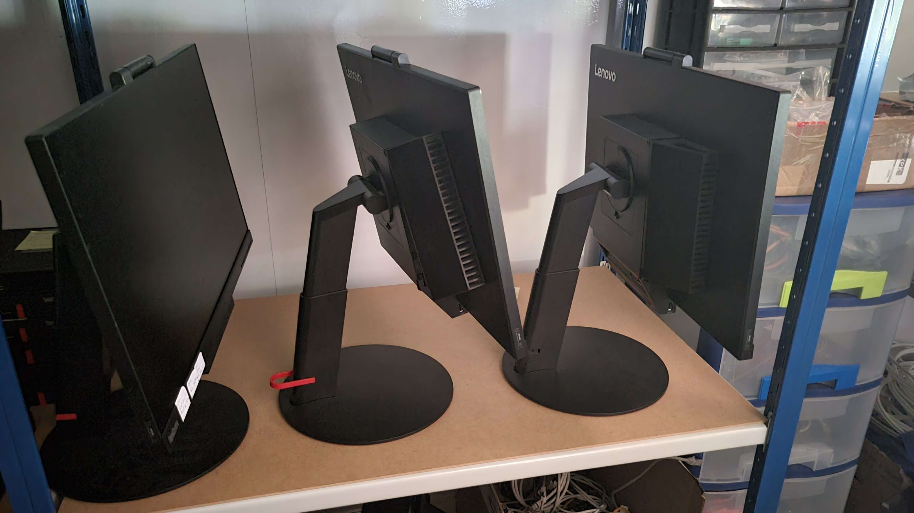
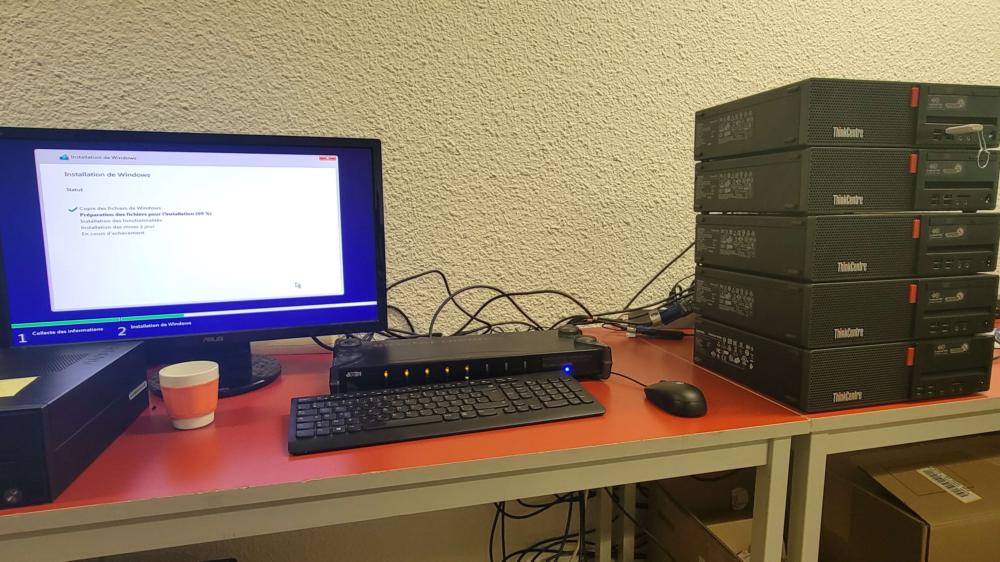
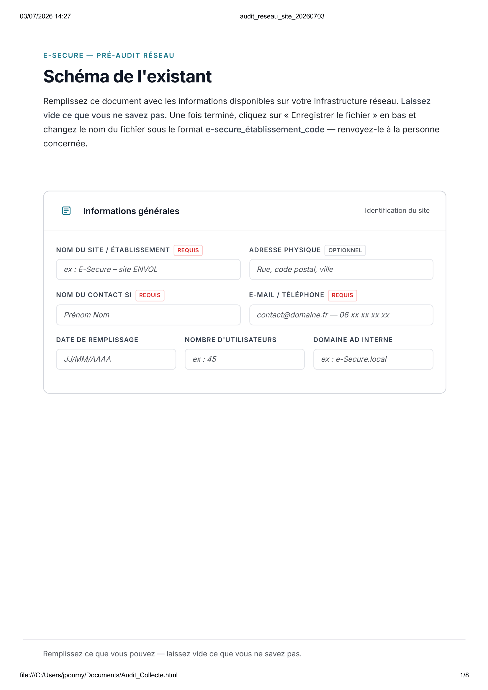
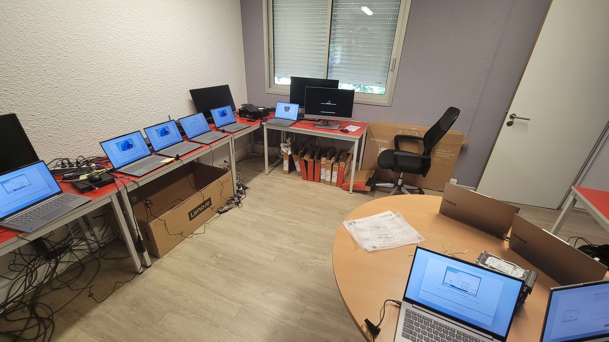

Stages
Semaine 1 - 18/05/26 au 22/05/26
Découverte de l'entreprise, des locaux & enseignements sur les méthodes de travail
Petites tâches quotidiennes
- Mise en place de 2 postes
- Réinitialisation & labélisation des composants de 4 ordinateurs
- Déplacement pour déployer un poste & changer un onduleur

Postes tout en un réinistialisés & labelisés
Semaine 2 - 25/05/26 au 29/05/26
Petites tâches quotidiennes
- Réinitialisation & labélisation des de 5 postes
- Réparation d'un disque dur pour un serveur NAS

5 postes réinistialisés
Semaine 3 - 01/06/26 au 05/06/26
Script de setup d'ordinateur Powershell, créant un compte administrateur sur un PC et laisse l'utilisateur choisir parmis plusieures applications
- Première version en ligne de commande, l'utilisateur choisit les applications en tapant un chiffre allant de 0 à 4
- Deuxième version utilisant l'infrastructure Winforms pour l'interface. A également ajouté la possibilité de créer un compte administrateur ou non, changer l'adresse du serveur GLPI si l'utilisateur à sélectionné ce dernier directement à partir du formulaire ainsi que d'autres améliorations.
Changements effectués pour une page d'audit de collecte de données
- Cette page permet à un utilisateur de référencer les ressources matérielles informatiques de son entreprise, tel que le(s) firewall(s), les switches, les serveurs, les imprimantes, etc...

Script de setup sous Winforms
Semaine 4 - 08/06/26 au 12/06/26
Continuation du script de setup d'ordinateur
- Le formulaire est encore en Powershell, mais il utilise maintenant du XAML, une infrastructure plus moderne qui offre plus d'options de customisation et peut plus facilement être modifié dans un logiciel comme Visual Studio.
- D'autres améliorations mineures ont été éffectués comme la possibilité de choisir le nom du compte administrateur (le script mettait un nom par défaut précédemment) et de redémarrer le poste dès que le processus est fini.
Script secondaire pour facilement rajouter ou supprimer des applications.
- Les tableaux contenant le nom des applications et les lignes de commandes permmetant de les installer qui étaient précédemment directemebt dans le script ont été bougé dans des fichier séparés dans le dossier array afin de pouvoir être édité plus facilement par ce script, le premier script l'appelle ensuite avec des commandes Get-Content ou Invoke-Expression.
Deuxième modification pour une page d'audit de collecte de données
- La version originale du document avait une fonction Javascript pour enregistrer la page en format HTML après que l'utilisateur ai rempli les champs. La nouvelle version remplace la fonction pour que le document soit enregistré en PDF à la place, le rendant plus facile à transférer et lire sur n'importe quel appareil.

Script d'ajout / suppression d'applications
Semaine 5 - 15/06/26 au 19/06/26
Troisième modification pour une page d'audit de collecte de données
- La dernière version de la page restaure la fonction originale pour enregistrer la page en HTML, en plus de pouvoir l'enregistrer en PDF, permettant ainsi donc d'avoir l'avantage du fichier PDF lisable facilement, mais aussi du fichier HTML plus facilement éditable.
Petites tâches quotidiennes
- Réinitialisation de 10 postes.
- Mise en place de 2 postes

Extrait de la page d'audit de collecte de données
Semaine 6 - 22/06/26 au 26/06/26
Petites tâches quotidiennes
- Labélisation des composants des 10 postes réinistialisés de la semaine précédente
- Mise en place de 15 postes

Mise en place d'ordinateurs portable